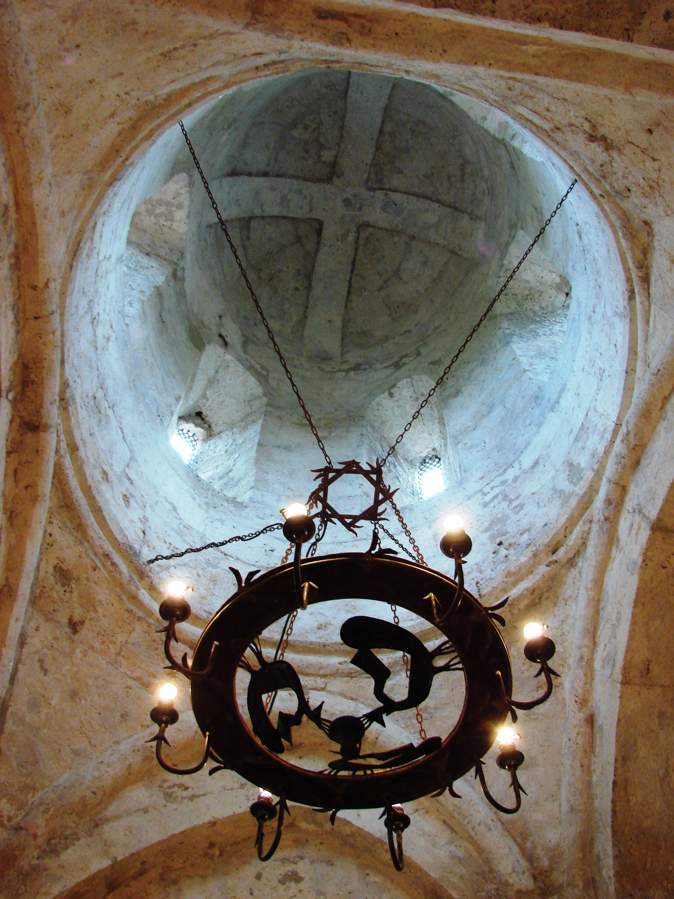
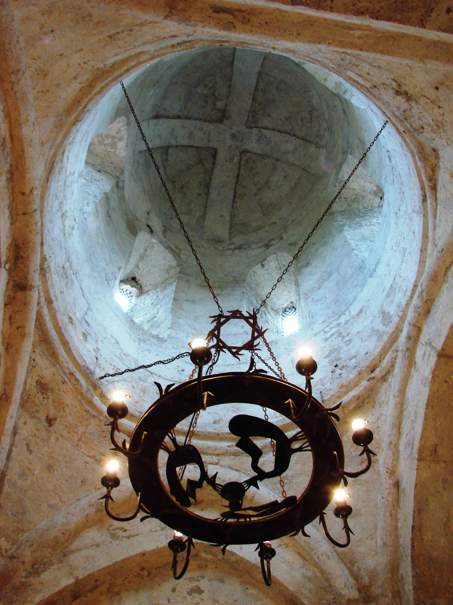

Kish Temple

 

Kish Church or Holy Elysee Church is a historical and architectural monument located in Kish village of Sheki region. According to some authors, it is the first church in the Caucasus. There are some opinions that it functioned as an Albanian, Georgian and Armenian church at different times.
History
According to the "History of the Albanian Land", St. Elysee, who was sent to Albania to preach Christianity by the brother of Jesus, St. James, first served as a missionary in Chola and Uti provinces, and then went to the village of Gish and built a church there. Modern Christian theologians believe that this event occurred less than 60 years later. According to many researchers, the place where this first Christian church was built not only in Caucasian Albania, but also in the whole South Caucasus, is the present-day village of Kish in the Sheki region, and therefore the church in the village of Kish in Sheki is now known as the Holy Elysee Church. The Albanian Apostolic Church is one of the oldest churches in the Caucasus, as well as in the whole Christian world. The spread of Christianity in Albania and the establishment of the first church are connected with the names of the apostles, and ancient sources also contain information about the construction of this church in the village of Kish. The "History of the Albanian Country" states that in the days of the "Sun of Justice" and the appearance of our Savior, the Father, the glory and essence of the Invisible Being, in the care of all people and in the glory of His everlasting existence, and sends his beloved disciples (apostles) as preachers all over the world, and we have been appointed holy apostle Faddey to the people of the East. Faddey came to the province of Artaz, where he was martyred by Tsar Sanaturk. Faddey's disciple returned to the holy city of Jerusalem to talk about the enviable martyrdom of his fellow apostle. Thereafter, the First Patriarch of the Elysee of Jerusalem was ordained to the East in the name of the Holy Spirit on the advice of St. James, the Lord's brother. The Elysee takes control of the East (Albania). He left Jerusalem and went to Iran, from where he escaped from the eyes of the Armenians and went to Maskut. He began his preaching in Chola, gathering disciples in various places and trying to remind them of the Savior. St. Patrick comes to Gisa, where he builds a church and makes bloodless sacrifices. This place is the beginning of all the churches and cities of the East, and we are the source of the conversion of Christians to the Orient. " including a Christian cleric. [14] According to Rashid bey Efendiyev, there was not a single Christian in the village of Kish in the early 20th century, but he notes that the Armenians of Zug, who settled in the city of Nukha (Sheki), "... appropriated the church and plastered its walls." They have cast iron on it. Rashid Bey also stressed that the church was "out of date with the apostles", but also noted that if excavations are carried out around the monument, "it will undoubtedly give good results." that is, the Armenians of Zug, who settled in the city of Nukha (Sheki), "appropriated the church and plastered its walls and painted it with iron. Rashid Bey also stressed that the church was "out of date with the apostles", but also noted that if excavations are carried out around the monument, "it will undoubtedly give good results." that is, the Armenians of Zug, who settled in the city of Nukha (Shaki), "appropriated the church and plastered its walls and ironed it. Rashid Bey also stressed that the church was "out of date with the apostles", but also noted that if excavations are carried out around the monument, "it will undoubtedly give good results."
Assumptions
Researchers also have various hypotheses about the village of Kish, where the Elysee built a church. ZNYampolski claimed that the settlement was Kish village in Sheki [16], and RB Goyushov claimed that this village was Kish village in Khojavend region. When describing the religion of the ancient Albanians, Strabo wrote that they worshiped Helios, Zeus, and Selena, and had a special sympathy for Selena. "The temple of Selena is located near the borders of Iberia. The priest here is the second person after the tsar. He rules the vast and well-populated sacred lands and temple slaves" ZNYampolski He studied the sources of the 5th-2nd centuries and noted that there was a temple in Albania, a province dedicated to God. AE Krimsky said that the temple of Selena was located in the Sheki region, and KV Trever in the Sheki region. He said that in the first century it was located far from the borders of Iberia and that this temple was on the site of the Sand Basilica.